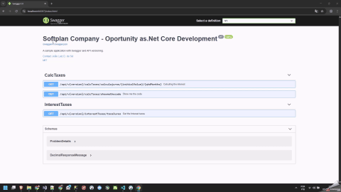
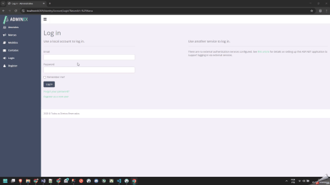
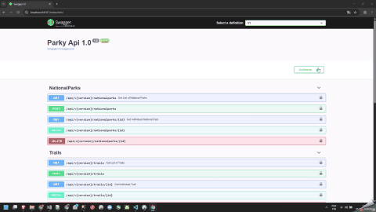
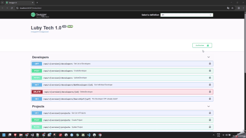

About Me
I'm a Brazilian developer passionate about building scalable solutions, clean architecture, and delivering value through software. I'm currently working with .NET, SQL Server, JavaScript, and Azure.
I’m a calm and collaborative person who views the colleagues as partners. I’m open to receive feedback and I often like to refactor my code if the time allows—even when it works—because I believe there is always space for improvements. I enjoy learning and constantly evolving. You’ll never hear me complain about doing something outside my usual routine; I see it as an opportunity to grow.
Currently, I work with Azure and .NET Core. Over my 6-year career as a developer, I’ve spent 5 of those years working remotely full-time. I’m well-adapted to this model and consistently meet deadlines. When I estimate the time for some task, I always deliver it. If an issue unexpected happen, I will use my personal time to ensure it doesn’t impact the company’s timeline.
I try to maintain clear communication with the team and I want the company to see me not only as a technical contributor but also as a teammate you can always count on. If for example is necessary a deploy outside the hour.
Skills
- Languages: C#, JavaScript, TypeScript, SQL
- Backend: .NET Core, ASP.NET, Entity Framework
- Frontend: Angular, React
- Cloud: Azure (Functions, Blob, Cosmos DB), AWS
- DevOps: Azure DevOps, Git, Docker, CI/CD
SOLID Principles
- S — Single Responsibility Principle (SRP): Only one instance of a class in the entire system.
- O — Open/Closed Principle (OCP): Classes should be open for extension, closed for modification.
- L — Liskov Substitution Principle (LSP): Subclasses must be replaceable by their parent type without breaking the system.
- I — Interface Segregation Principle (ISP): Don’t force clients to depend on methods they don’t use.
- D — Dependency Inversion Principle (DIP): Depend on abstractions, not concretions.
Some Patterns Used
- Singleton: Each class/module should have only one reason to change.
- Factory/Abstract Factory: Creates objects based on logic. Abstract Factory → Creates families of related objects.
- Strategy: Exchanges actions at runtime.
- Observer: Notifies objects when something changes.
- Decorator: Adds functionality to an object without changing its structure.
- Builder: Constructs objects step by step.
Videos
- Github and WebPage https://youtu.be/Tgi2GDnW6Jc
- Design Patterns https://youtu.be/sV3hJ2mVb90
- Architectural Pattern CQRS https://youtu.be/dkq6jQvN9JE
- FinancialProject DDD & OOP Principles https://youtu.be/9X_GpdSLcLQ
- Rabbit MQ Project https://youtu.be/-C9XG8B7zOk
- Data Analysis with Python and Machine Learning (PT) https://www.youtube.com/watch?v=1vuGHRynw48&t=5s
- Genetic algorithm (PT) https://www.youtube.com/watch?v=Hc70J2slX2s&t=32s
- Predictive Models, Dashboarding, and Time Series (PT) https://www.youtube.com/watch?v=Hym8OTsLfIs&t=29s
- Smart Video Analytics: Facial Recognition & Emotion Detection System (PT) https://www.youtube.com/watch?v=7B3uK4HVerM
Projects
Data Analysis with Python and Machine Learning
Machine learning project focused on data analysis, using Python to extract insights, identify patterns, and support data-driven decision-making.
Genetic Algorithm (GA)
This project aims to apply **Artificial Intelligence** techniques, specifically a **Genetic Algorithm (GA)**, to solve the **student grouping (class assignment)** problem, maximizing affinities between students.
Smart Video Analytics: Facial Recognition & Emotion Detection System
An AI-powered video analytics solution that integrates Computer Vision and Deep Learning to automate facial recognition, emotion detection, and human activity classification within video streams.
DistilBERT QA Fine-Tuning
This project fine-tunes a DistilBERT model for Question Answering (extractive QA) using a SQuAD-style dataset, with careful preprocessing, training/evaluation loops, and robust metrics tracking.
LubyTechProject
RESTful API developed as part of a technical challenge from Luby to control developers' time entries, focusing on clean architecture and best practices.
DockerKubernetesPersonal
Personal project to practice deploying .NET applications in Docker containers with orchestration using Kubernetes, based on ASP.NET Core MVC.
SoftPlanProject
Project developed as part of a technical challenge proposed by Softplan, focusing on RESTful APIs, clean architecture, and .NET development best practices.
Questor Sistemas with Admin LTE
The Questor System project demonstrates the initiative to build a complete business management system by integrating both frontend and backend.
Parky
Project focused on practicing RESTful API creation with ASP.NET Core, emphasizing authentication, authorization, clean architecture, and continuous integration.
FinancialProject
Project focused on Clean Architecture and Domain-Driven Design (DDD), emphasizing business rules and OOP best practices such as inheritance, abstraction, and polymorphism.
CQRS Architecture
Project demonstrating the use of the CQRS (Command Query Responsibility Segregation) pattern to separate read and write responsibilities, improving maintainability and scalability.
Design Patterns Showcase
Project demonstrating key Object-Oriented Design Patterns such as Singleton, Factory, Strategy, Observer, Decorator, and Builder — all implemented in C# with real use cases.


🛠️ Technologies Used
- ASP.NET Core 6 – Framework for API development
- C# – Programming language used
- Entity Framework Core – ORM for data access
- SQL Server – Relational database
- Swagger – Interactive API documentation
- xUnit – Unit testing framework
🏛️ Architecture
- Domain: Contains entities and interfaces representing business core
- Application: Implements business logic and use cases
- Infrastructure: Repository and data access implementations
- API: Presentation layer exposing application endpoints
⭐ Main Features
- CRUD operations using Entity Framework Core
- Modular architecture with clear responsibility separation
- API documentation using Swagger
- Unit testing with xUnit

🛠️ Technologies Used
- ASP.NET Core – Backend framework for building Web APIs
- C# – Primary programming language used in the backend
- Entity Framework Core – ORM for handling database access
- SQL Server – Relational database for data storage
- HTML, CSS, JavaScript – Frontend technologies using AdminLTE
- AdminLTE Template – Responsive UI template for admin dashboard
- jQuery – Used for AJAX and dynamic interactions
🏛️ Architecture
- WebApi: ASP.NET Core API project for business logic and data services
- QuestorSistemasAdmin: Admin dashboard built with AdminLTE
- QuestorSistemasSite: Public-facing website or client interface
- Controllers: Manage HTTP requests and route to services
- Repositories: Abstraction layer for data access with EF Core
- Models: Represent entities and data transfer objects
⭐ Main Features
- Admin dashboard with ready-to-use UI template
- Backend API structure ready for extension
- Entity Framework Core integration for database operations
- Modern, responsive UI with AdminLTE
- Separation of concerns: API, Admin, and Public site

🛠️ Technologies Used
- ASP.NET Core Web API – Framework for API development
- Entity Framework Core – ORM for data access
- SQL Server – Relational database
- JWT (JSON Web Tokens) – Authentication and authorization
- Swagger – Interactive API documentation
- Azure Pipelines – Continuous Integration/Delivery (CI/CD)
🏛️ Architecture
- Controllers: Handle HTTP requests and return appropriate responses
- Models: Define data structures used in the application
- Repositories: Data access logic using Repository pattern
- Data: Manages DB context and migrations
- JWT-based authentication securing API routes
⭐ Main Features
- CRUD (Create, Read, Update, Delete) for national park resources
- User authentication and authorization with JWT
- Interactive API documentation using Swagger
- CI/CD pipeline configured with Azure Pipelines

🛠️ Technologies Used
- .NET Core 3.1 / .NET 5+ – For building the API
- Entity Framework Core – For data access
- SQL Server – Relational database
- xUnit / Moq – For unit testing
- Angular and React – Frontends in development
- Swagger – API documentation and testing
🏛️ Architecture
- LubyTechAPI: API layer
- LubyTechModel: Models and entities
- LubyTechTests: Unit tests
- LubyTechAngular and LubyTechReact: Distinct frontends
- Clean Architecture / DDD-Inspired: Responsibility separation, dependency injection, organized by domain
⭐ Main Features
- Developer registration and listing
- Work hours logging
- Total hours calculation per developer
- Schedule conflict validation
- API documented with Swagger
- Automated tests for business logic coverage
Experience
- PC Manutenção (Freelance) – IT Technician (April 2015 – November 2018)
● Maintenance and replacement of motherboards and electronic components
● Software installation and training on operating systems, Office packages, and various programs - Vamos para Cima (Internship) – Laravel Intern (April – July 2018)
● Assisted in developing an e-commerce platform using technologies such as Laravel, Git, PHP, Bootstrap, Vagrant, MySQL, Firebase, HTML5, JavaScript, jQuery, and CSS3 - AM4 TI – Full Stack Developer Jr (2019 – 2021)
- Super Teia – Full Stack Developer Jr (2021)
- Datora Telecom (via Luby Software) – Full Stack Developer (2022 – Present)
- Luby Software – Full Stack Developer (2021 – Present)
Education & Certifications
- Bachelor of Science in Information Systems – Dom Bosco University (Brazil)
- Microsoft Certified: Azure Developer Associate (AZ-204)
- Microsoft Certified: Azure Fundamentals
- AWS Certified Cloud Practitioner
- IA for Developers: Especialization FIAP/Alura
Languages
- English: Intermediate B2
- Spanish: Intermediate B1
- Portuguese: Native
Books
- Clean Code: A Handbook of Agile Software Craftsmanship by — A timeless guide that teaches how to write elegant, readable, and maintainable code—turning good developers into true software craftsmen.
- Clean Architecture: A Craftsman’s Guide to Software Structure and Design by — A must-read for developers aiming to build scalable, maintainable systems through timeless architectural principles that keep software flexible and independent of frameworks.
- Domain-Driven Design: Tackling Complexity in the Heart of Software by — A foundational masterpiece that teaches how to align code with business reality, turning complex domains into clear, maintainable, and meaningful software models.
- Software Architecture: The Hard Parts by — A deep, practical exploration of the toughest architectural decisions—showing how to balance trade-offs in scalability, coupling, and data across complex distributed systems.
Contact
Email: joaoluizdeveloper@gmail.com
Phone: +55 (24) 99832-9477 (WhatsApp)
LinkedIn: linkedin.com/in/joaoluizdeveloper
GitHub: github.com/joaoluizdeveloper